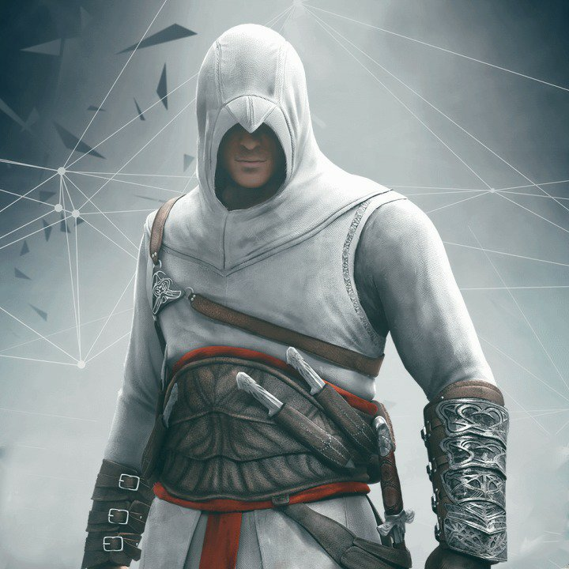
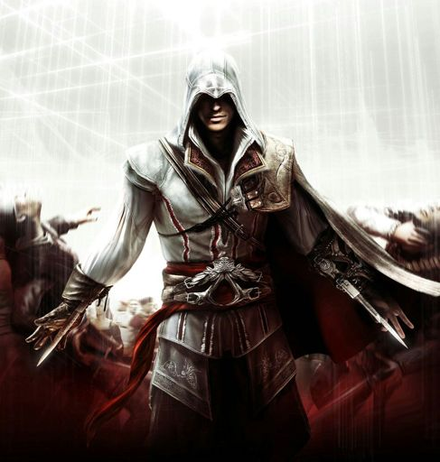
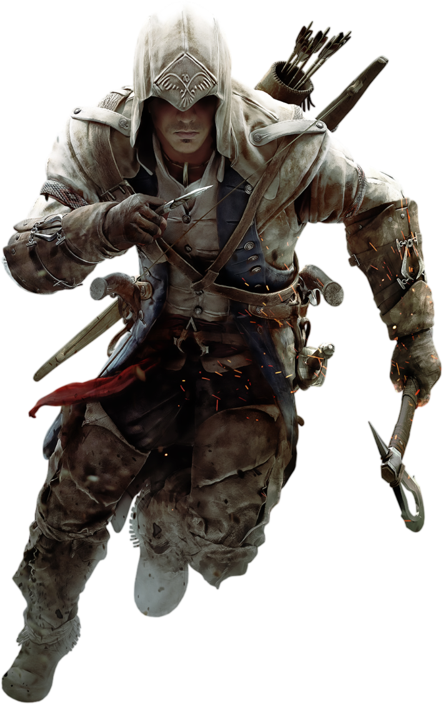
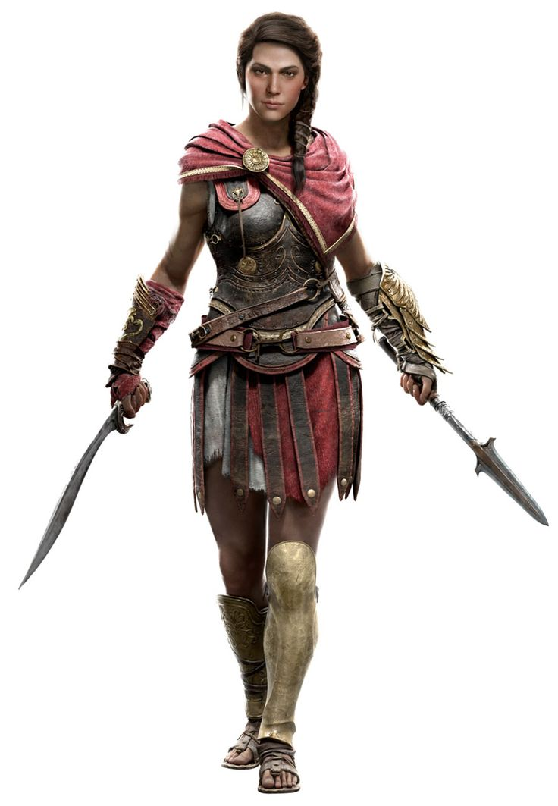
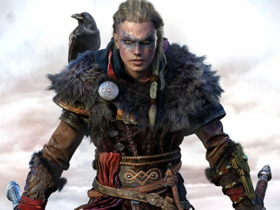
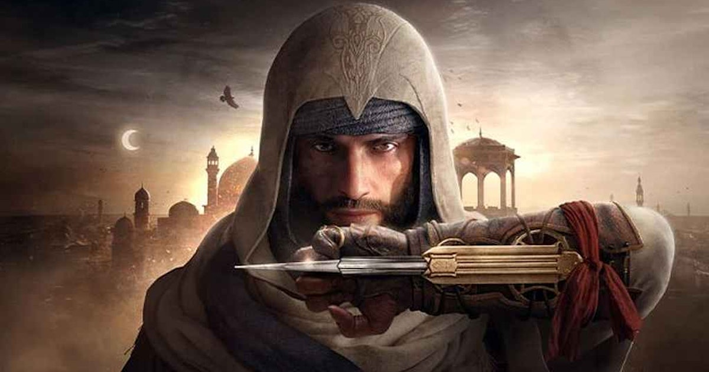

Cast
-
Altair Ibn-La'Ahad
Protagonist in "Assassin's Creed"
-
Ezio Auditore da Firenze
Protagonist in "Assassin's Creed II", "Assassin's Creed: Brotherhood", "Assassin's Creed: Revelations"
-
Connor Kenway (Ratonhnhaké:ton)
Protagonist in "Assassin's Creed III"
-
Edward Kenway

Protagonist in "Assassin's Creed IV: Black Flag"
-
Shay Patrick Cormac

Protagonist in "Assassin's Creed Rogue"
-
Arno Dorian

Protagonist in "Assassin's Creed: Unity"
-
Jacob Frye

Protagonist in "Assassin's Creed: Syndicate"
-
Bayek of Siwa

Protagonist in "Assassin's Creed Origins"
-
Kassandra
Protagonist in "Assassin's Creed Odyssey"
-
Eivor Varinsdottir
Protagonist in "Assassin's Creed: Valhalla"
-
Basim
Protagonist in "Assassin's Creed: Mirage"